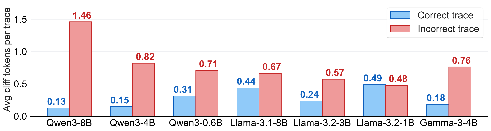
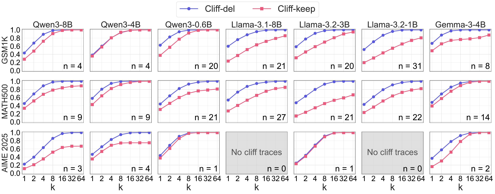
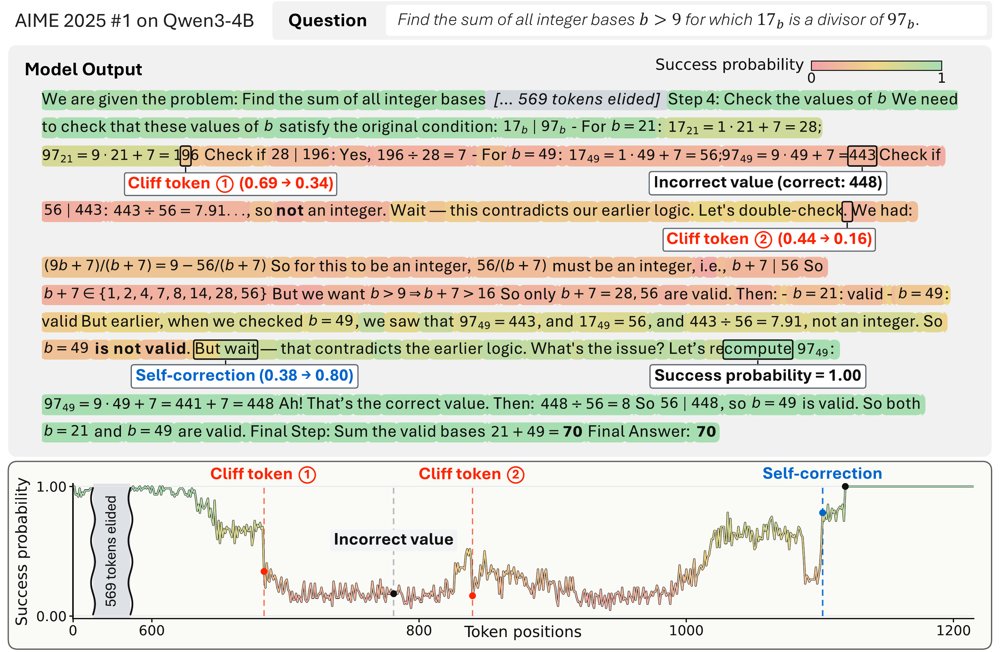
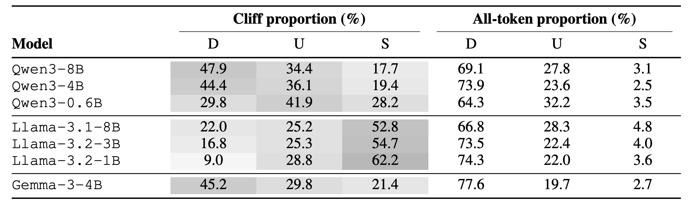
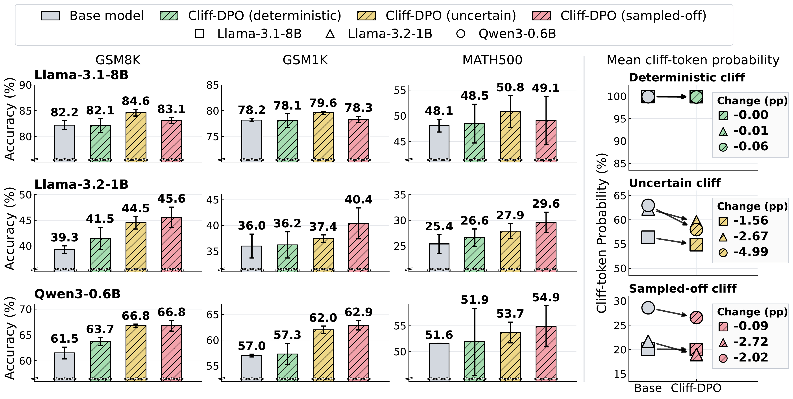

Deterministic cliff
A greedy token with entropy below 0.0561; the model samples it with near certainty.
arXiv 2026
1Seoul National University 2University of Illinois Urbana-Champaign 3Boston University
†Corresponding author
Success probability is the probability of reaching the correct answer conditioned on the reasoning trace generated up to a specific token position. We estimate it by running continuations from each token prefix and measuring the fraction that reach the correct answer.
A cliff token is a token where success probability drops significantly when it is generated. The trace may still be recoverable before that token; after it is fixed, continuations are more likely to fail.
We identify drops using an adaptive threshold based on a one-sided two-proportion z-test at a 95% confidence level. The base threshold is τ = 0.1, and success probability is estimated with 64 rollouts at each evaluated token position.
Across seven models and three mathematical reasoning benchmarks (GSM1K, MATH500, and AIME 2025), cliff tokens occur more frequently in incorrect traces than in correct traces for most models, with Llama-3.2-1B as the exception.

Resampling before the first cliff token (Cliff-del) generally yields higher pass@k than resampling after it (Cliff-keep) at the same sample count, suggesting that cliff tokens trigger reasoning failures.

A cliff token does not necessarily mark an irreversible failure or coincide with the actual error token. In Figure 4, success probability recovers after the model writes “But wait” and corrects its arithmetic. Neither of the two cliff tokens coincides with the miscomputed value 443, where the arithmetic error occurs.

We characterize cliff tokens by greedy choice and token entropy. Their distribution varies by model family and scale: as model scale increases within the Qwen3 and Llama-3 families, sampled-off cliffs become less common and deterministic cliffs more common. Qwen3-8B also produces more deterministic cliffs than the similarly sized Llama-3.1-8B.
A greedy token with entropy below 0.0561; the model samples it with near certainty.
A greedy token with entropy at or above 0.0561; the top choice is sampled under uncertainty.
A non-greedy token with entropy at or above 0.0561; another choice is sampled under uncertainty.

Cliff-DPO applies single-token preference optimization at identified cliff positions, pairing a non-cliff candidate token with the original cliff token. The uncertain and sampled-off variants achieve higher mean accuracy than the base model and deterministic variant across the three evaluated models on GSM8K, GSM1K, and MATH500.

@article{ko2026clifftoken,
title={Cliff Tokens: Analyzing Failure Trigger Tokens in LLM Mathematical Reasoning},
author={Ko, Jaeyong and Lee, Jinu and Kang, Pilsung and Lee, Yukyung},
journal={arXiv preprint arXiv:2606.25524},
year={2026},
eprint={2606.25524},
archivePrefix={arXiv}
}